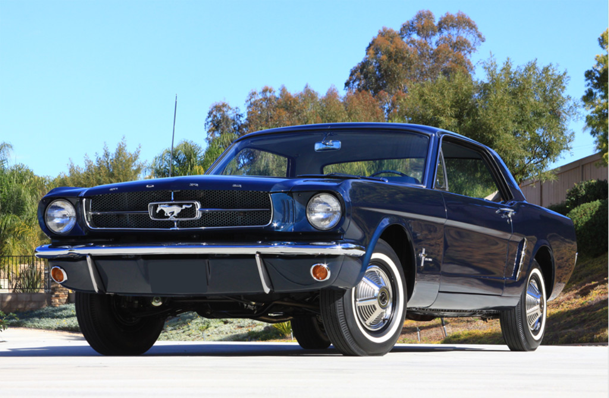

Ford Mustang
1964—1966 модельний рік
Кабріолет моделі 1966 року. Перший Mustang покинув конвеєр вранці 9 березня 1964 року, а до кінця цього ж року було продано 263 434 машини. У середині 1965 була представлена модель в кузові фастбек, націлена проти конкурентної моделі Plymouth Barracuda і виглядає гармонійніше від базового купе. Дуже привабливий зовні був і автомобіль з кузовом convertible (кабріолет). Основою дизайну слугував стилістичний «ключ» вдалого люксового купе Lincoln Continental Mark II середини п'ятдесятих років, з його характерними пропорціями з довгим капотом і коротким багажником і пластиковою боковиною кузова зі зламом в районі арки заднього колеса. Проте, в порівнянні з ним зовнішність «Мустанга» була менш суворою і динамічнішою. Дизайн вважався для свого часу досить вдалим, хоча і нетрадиційним для Америки — висловлювалися навіть думки, що в цьому відношенні «Мустанг» з його чистими лініями для компактного кузова і помірною кількістю хрому в обробці був ближче до європейських, а не до масових американських моделей тих років з характерними для них надлишковими розмірами і зайвим захопленням блискучими орнаментами. З технічної точки зору ж, одкровенням автомобіль не був. Базовий двигун був добре відомим в США, як шестициліндровий силовий агрегат від Ford Falcon, розточеними до 170 кубічних дюймів (~ 2,8 л.), Він був агрегованим з триступінчатою механічною або двох- чи триступінчастою автоматичною трансмісією. Передня підвіска була в цілому запозичена у того ж «Фалькона», і конструктивно була звичайним зразком паралелограмної підвіски на двох поперечних важелях — при цьому, амортизатор в блоці з пружиною був винесений із простору між важелями і розміщений над верхнім важелем. Така підвіска (в Америці її називають «double-wishbone») була трохи компактнішою, ніж звичайна паралелограмна, зокрема, вивільняючи місце для великих двигунів V8. Стабілізатор поперечної стійкості пропонувався як опція. Задня підвіска була залежною, з поздовжніми напів-веліптичними ресорами і жорсткою балкою ведучого моста. Гальма в базі були барабанними на всіх колесах, вакуумний підсилювач пропонувався як опція. Довершував картину "черв'ячний" рульовий механізм з циркулюючими кульками від «Фалькона» з великим передавальним відношенням (гідропідсилювач керма в ті роки був в цьому класі малозатребуваною опцією). Як результат, хоча керованість і ходові якості автомобіля і були кращими, ніж у базової моделі — «Фалькон» — за рахунок нижчого центру ваги і змінених налаштувань шасі, але був трішки кращим. У 1965 році в стандартний інтер'єр "Мустанга" введені роздільні сидіння водія і пасажира, з можливістю регулювання, радіоприймач AM, важіль переключення на підлозі. Також як опції були доступні сонцезахисні козирки, механічне дистанційне керування дзеркалом, підлогова консоль і нероздільне переднє сидіння. Також одним з варіантів інтер'єру був «Rally-Pack»: годинник і тахометр з кріпленням на рульовій колонці. Він була доступний за 69,30 $ (з установкою у дилерів 75,95 $). У квітні 1965 року покупцям запропонували пакет GT, до нього входили: налаштована підвіска, чіткіше рульове керування, передні дискові гальма, подвійний випускна система і особливе забарвлення кузова. Особливо потужна модифікація від знаменитого ательє гонщика Керола Шелбі — Shelby GT350 — випускалася в кузові фастбек, комплектувалася 289-м двигуном V8, форсованим до 306 к.с. і продавалася в салонах будь-якому охочому. У 1966 році базовий Mustang став в базі комплектуватися 120-сильним двигуном з рядним розташуванням шести циліндрів і об'ємом 200 кубічних дюймів (3,2 літра). Як опції були доступні три 289-кубових двигуна V8, потужністю від 200 до 271 к.с. Версія Shelby GT350 тепер була доступна в чотирьох кольорах, з АКПП і механічним нагнітачем Paxton, що дозволяв після досягнення мотором певних оборотів збільшувати потужність до 420—430 к.с. Також у 1966 році "Мустанг" одним з перших отримав монофонічний автомобільний радіоприймач з діапазонами AM/FM, а сонцезахисні козирки стали стандартним обладнанням. Коли в Німеччині почалися продажі Ford Mustang, виявилося, що дане ім'я вже зареєстровано. Німецька компанія запропонувала продати права за 10,000 $. Ford відмовився і видалив значок «Mustang», назвавши його для німецького ринку «Т-5».